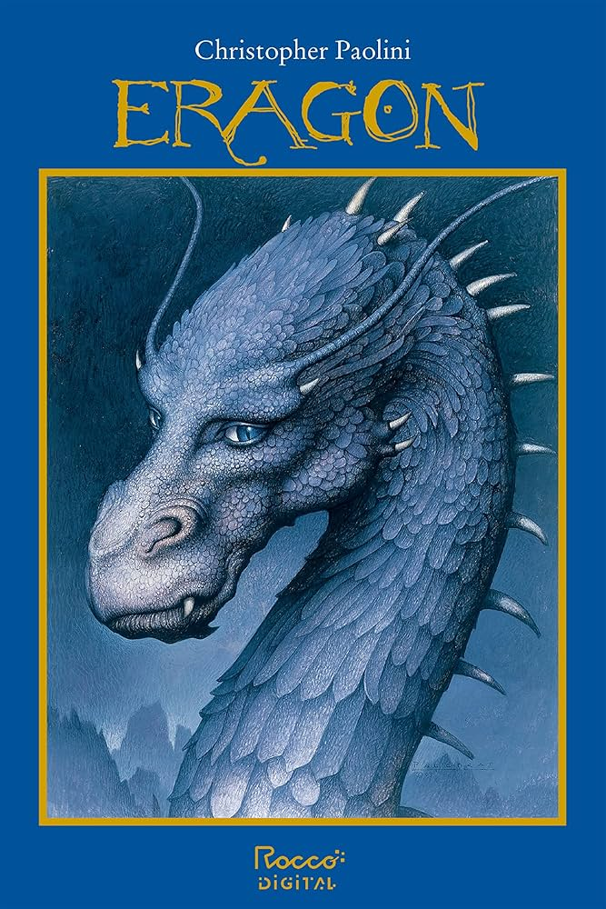
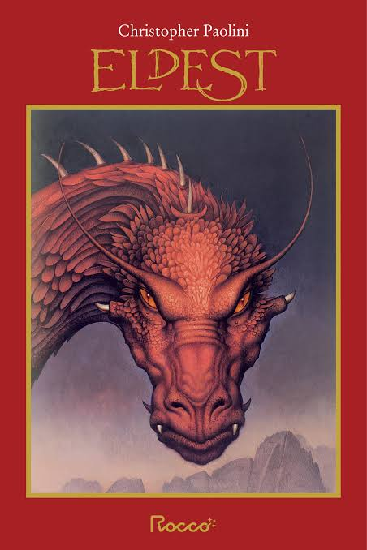
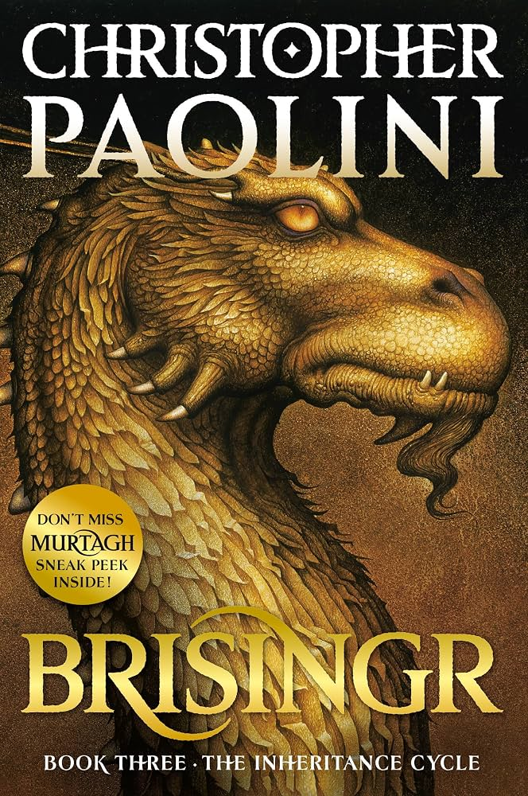
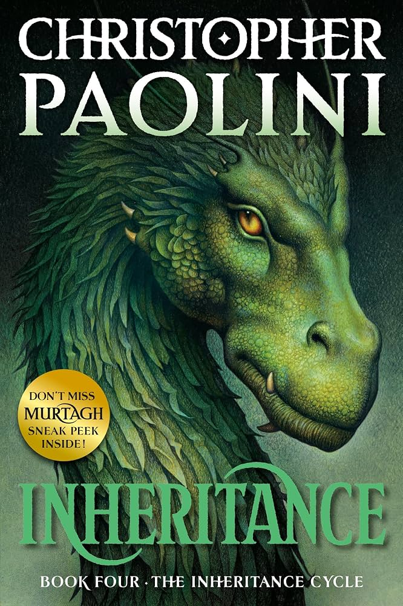

It begins with a mysterious blue stone. When a dragon hatches from it, a farm boy named Eragon is swept into a world of ancient magic, dangerous alliances, and a rebellion against a ruthless king. Together with Saphira, he must discover what it means to be a Dragon Rider—and decide the fate of Alagaësia.

Explore the cycle in order. Hover over a title—or tap it—to discover its story.

eldest
brisingr
inheritanceRaised in Montana, Christopher Paolini began writing Eragon at fifteen. What started as a self-published adventure became the internationally bestselling Inheritance Cycle. His love of wild landscapes, intricate languages, and epic storytelling brings Alagaësia to life. He also explores distant worlds through the science-fiction novels of the Fractalverse.
Other books by Christopher Paolini · Select a title to find it on Amazon.
An independent reader’s guide. Book covers and author photograph sourced from Paolini.net.